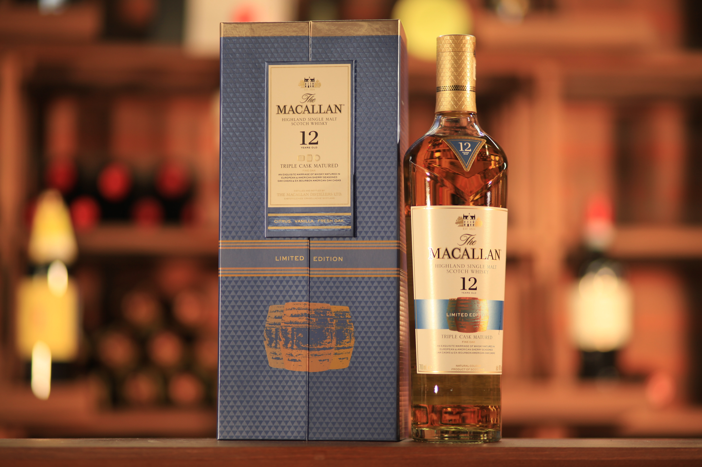
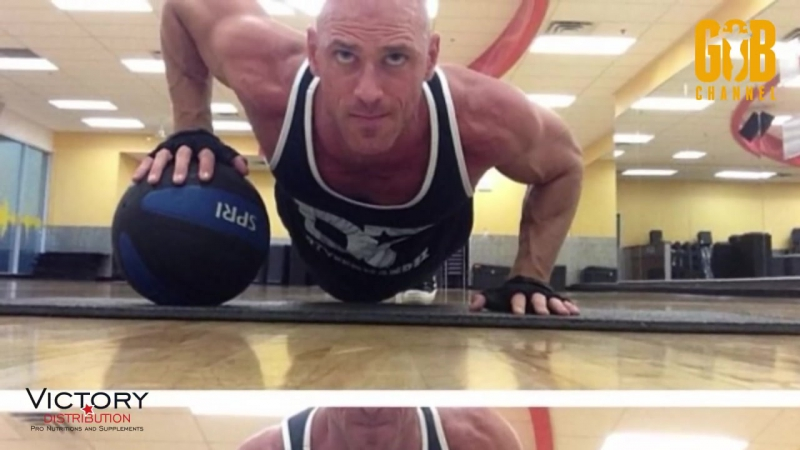

Очень любою односолодовый виски.
Нет какого-либо сезона для этого хобби. Можно увлекаться круглогодчно.
Самое главное - знать меру и вовремя остановиться, чтобы это вызвало алкоголизм и негодование со стоороны близких.
Расскажу немного об одном из предпочитаемых напитков. The Macallan (с англ. — «Мака́ллан») — шотландский бренд (марка) виски из региона Хайленд. Название The Macallan произошло от слияния двух слов на гэльском (древнешотландском) языке: magh — «участок плодородной земли», ellan или St. Fillan — «Святой Филлан». Ударение ставится на второй слог The Macállan. Под этой маркой на дистиллерии в деревне Крейгеллачи (графство Мори) выпускается элитный виски категории single malt, выдержанный в дубовых бочках из-под хереса и бурбона. В 2018 году была открыта новая дистиллерия, которую создало известное во всем мире архитектурное агентство Rogers Stirk Harbour + Partners[en]. Она представляет собой уникальный ландшафтный и экологический проект, в который инвестировано £140 млн. В строительстве использованы натуральные материалы — местный камень и древесина. Юридическое название организации-владельца — The Edrington Group[en]. Производство виски на новой дистиллерии достигает 15 млн литров в год. На дистиллерии сейчас располагается 36 перегонных кубов (12 для первой перегонки и 24 для второй). Перегонные кубы на The Macallan одни из самых маленьких в Шотландии: объем куба для первой перегонки — 13 000 л, для второй — 3 900

Нестабильно, но регулярно я посещаю зал. 3-4 раза в неделю. Иногда реже.
Стараюсь держать себя в хорошей форме.
Это придает уверенности в себе и помогает отвлечься от всякой ерунды, которая так и лезет в голову.